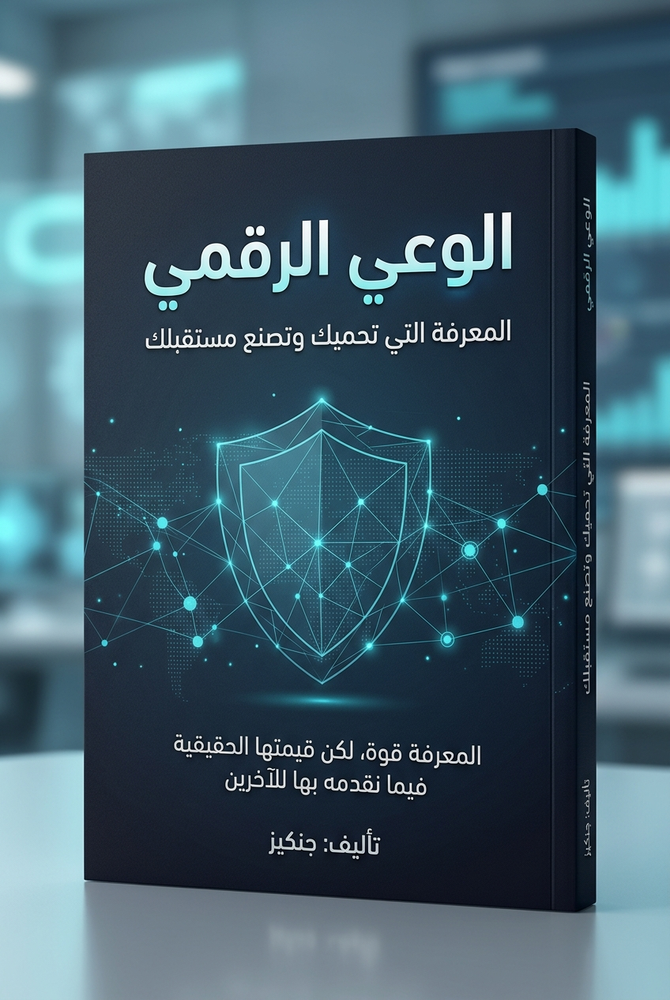

«المعرفة قوة، لكن قيمتها الحقيقية تتجلّى في نفع الآخرين بها».
عنوان الكتاب: الوعي الرقمي: المعرفة التي تحميك وتصنع مستقبلك
المؤلف: جنكيز
لغة الكتاب: العربية الفصحى الحديثة
الطبعة: الطبعة الأولى — 2026م / 1447هـ
التصنيف الموضوعي: علوم الحاسب / الأمن السيبراني / البرمجة والتعليم التقني / الثقافة الرقمية
جميع الحقوق محفوظة للمؤلف © 2026 جنكيز.
لا يجوز نسخ أي جزء من هذا الكتاب، أو تخزينه في أي نظام استرجاع إلكتروني، أو نقله بأي شكل من الأشكال أو بأي وسيلة—إلكترونية، أو ميكانيكية، أو تصويرية، أو تسجيلية—بقصد الاستغلال التجاري دون إذن كتابي مسبق من المؤلف. يُسمح بالاقتباس العلمي القصير لأغراض المراجعة والتدريس والتوعية المجتمعية مع الإشارة الصريحة للمصدر.
المعلومات والنماذج والأكواد البرمجية الواردة في هذا الكتاب مُعدة حصرياً لأغراض تعليمية، وتوعوية، وتثقيفية، ودفاعية لتعزيز الأمن الرقمي الشخصي والمؤسسي، وحماية الأنظمة والبيانات، ونشر الفكر التقني الإيجابي.
المؤلف والناشر يُخليان مسؤوليتهما القانونية والأخلاقية عن أي استخدام غير مشروع، أو غير مصرح به، أو أي محاولة لإساءة توظيف المفاهيم التقنية الواردة هنا لاختراق الأنظمة، أو التعدي على خصوصية الأفراد، أو انتهاك القوانين واللوائح التنظيمية لمكافحة الجرائم المعلوماتية. إن تطبيق أي تقييم أمني عملي يجب أن يتم حصرياً داخل بيئات افتراضية معزولة، أو على أنظمة يمتلك المستخدم إذناً خطياً ورسمياً مسبقاً باختبارها.
بسم الله الرحمن الرحيم،
نعيش اليوم في عالم أصبحت فيه التكنولوجيا جزءًا أساسيًا من حياتنا اليومية. فنحن نستخدمها للتواصل مع الآخرين، والتعلّم، والعمل، وإدارة شؤوننا المختلفة، كما نعتمد عليها في حفظ معلوماتنا وذكرياتنا.
ومع الفوائد الكبيرة التي تقدمها التكنولوجيا، تظهر تحديات جديدة تتعلق بحماية الخصوصية وأمن المعلومات والاستخدام المسؤول للأدوات الرقمية.
ومن هنا جاءت فكرة هذا الكتاب؛ ليكون دليلًا يساعد القارئ على فهم العالم الرقمي، والتعرف إلى مخاطره، واكتساب المعرفة اللازمة للتعامل معه بوعي وأمان.
لم أرد لهذا العمل أن يكون سردًا نظريًا جافًا يعقّد المفاهيم على القارئ العادي، ولا استعراضًا سطحيًا لا يروي شغف المهتم بالتقنية. لقد حرصت على أن أقدّم لك المعرفة من منبعها العملي؛ لترى ما يجري خلف الشاشات بوضوح، وتدرك كيف تفكر الأنظمة، وكيف يتربص المخترقون بالثغرات، وكيف تحمي نفسك وعائلتك دون خوف أو إفراط.
إن الأمان الرقمي في جوهره ليس مجرد أدوات نثبّتها، بل هو نمط تفكير وقرارات يومية واعية. وإذا كانت البرمجة تمكّننا من بناء أنظمة مذهلة، فإن وعينا الإنساني ومسؤوليتنا الأخلاقية هما الضمان الوحيد لأن تبقى هذه التقنيات في خدمة الإنسان وسعادته.
أضع هذا الكتاب بين يديك، آملاً أن تجد في صفحاته نفعاً حقيقياً يرشدك في مسيرتك الرقمية، ويسهم في بناء مجتمع عربي واعٍ ومحصّن قادر على صناعة مستقبله بثقة.
جنكيز
«إن أعظم تحول في تاريخ البشرية الحديث لم يكن في بناء ناطحات السحاب أو غزو الفضاء، بل كان في بناء شبكة غير مرئية تربط عقول مليارات البشر وأجهزتهم في نبضة واحدة».
تأمل معي مشهداً يتكرر مليارات المرات كل صباح في مختلف بقاع الأرض:
يدق منبه الهاتف الذكي في غرفتك؛ تمد يدك لتوقفه بلمسة خفيفة. في تلك اللحظة بالذات، وقبل أن تغادر فراشك، تنظر إلى شاشة جهازك لتشاهد خريطة الطقس المحدثة لحظياً عبر الأقمار الاصطناعية، وتقرأ خبراً عاجلاً وقع قبل دقيقة واحدة في قارة أخرى، وتستلم رسالة صوتية من صديق يبعد عنك آلاف الكيلومترات، وتدفع فاتورة الكهرباء عبر تطبيقك البنكي، ثم تطلب وسيلة نقل تقلك إلى عملك وتتابع حركتها الدقيقة على الخريطة عبر إشارات نظام تحديد المواقع العالمي (GPS).
كل هذا يحدث في أقل من خمس دقائق، دون أن تلتفت إلى المعجزة العلمية والهندسية التي جعلت ذلك ممكناً.
لقد أصبح العالم الرقمي هو الفضاء الطبيعي الثاني للإنسان الحديث. نحن نأكل، ونتعلم، ونعمل، ونتواصل، ونحفظ ذكرياتنا، وندير مدخراتنا، ونعبر عن آرائنا عبر هذا الفضاء. ولكن، كم منا يعرف حقاً ما الذي يحدث خلف هذا الزجاج الأملس اللامع عندما ننقر بإصبعنا على الشاشة؟ كيف تنتقل أصواتنا وصورنا وأموالنا عبر الهواء؟ وما الثمن الذي ندفعه مقابل هذه الراحة المطلقة؟
إن الهدف من هذا الفصل الأول ليس تقديم سرد تاريخي ممل، بل نزع الغموض عن العالم الرقمي؛ لتبدأ رحلتك في هذا الكتاب وأنت تفهم الأرضية التي تقف عليها، وتدرك لماذا أصبح الوعي الرقمي طوق نجاة لا غنى عنه لكل إنسان.
كثيراً ما نسمع مصطلح «التحول الرقمي» (Digital Transformation) في الأخبار وخطابات الحكومات والشركات، ولكن ما معناه الدقيق بعيداً عن الرنين التسويقي؟
لنفهم التحول الرقمي، يجب أن نميز بين ثلاثة مستويات متراتبة:
الرقمنة المادية (Digitization):
هي تحويل المعلومات من صيغتها الفيزيائية التقليدية (ورق، صور مطبوعة، أشرطة صوتية) إلى صيغة رقمية ثنائية تفهمها الحواسيب (أصفار وآحاد). مثال ذلك: مسح وثيقة ورقية ضوئياً وتحويلها إلى ملف PDF.
رقمنة العمليات (Digitalization):
هي توظيف التكنولوجيا الرقمية لتحسين إجراء أو معاملة معينة وجعلها أسرع وأكثر كفاءة. مثال ذلك: بدلاً من الوقوف في طابور طويل لتجديد رخصة القيادة، تقوم بملء نموذج عبر موقع إلكتروني.
التحول الرقمي الشامل (Digital Transformation):
هو تغيير جذري في نموذج التفكير والعمل والحياة، بحيث تصبح التكنولوجيا هي الأساس الذي يُعاد بناء المجتمع والخدمات والعلاقات وفقاً له. لم يعد الأمر مجرد «أتمتة» لما هو قديم، بل خلق أساليب حياة واقتصاد ومعرفة لم تكن ممكنة من قبل.
إن التحول الرقمي لا يعني استبدال الورق بالشاشات فحسب، بل يعني انتقال مركز الثقل الإنساني إلى عالم تتدفق فيه البيانات بسرعة الضوء.
عندما نتحدث عن «الحوسبة السحابية» أو «رفع الملفات إلى الإنترنت»، يتخيل الكثير من الناس أن معلوماتهم تطفو حرفياً في الهواء الطلق أو بين الغيوم!
الحقيقة الصادمة لمعظم المبتدئين هي أن الإنترنت شبكة فيزيائية ملموسة بنسبة تفوق 95%.
إذا انقطعت الكابلات المادية، يتوقف الإنترنت فوراً.
في هذه اللحظة التي تقرأ فيها هذه السطور، هناك ما يزيد عن 1.4 مليون كيلومتر من كابلات الألياف الضوئية الممتدة في قيعان المحيطات والبحار، تربط القارات بعضها ببعض. هذه الكابلات ليست بحجم أنابيب النفط الضخمة، بل إن قطر الكابل في الأعماق لا يتجاوز خرطوم مياه الحديقة، ولكنه مغلف بطبقات فولاذية وعوازل تحميه من ضغط المياه وأسماك القرش والحركات التكتونية.
داخل هذا الكابل الصغير، توجد شعيرات زجاجية بالغة الدقة (أرق من شعرة الإنسان)، تنقل البيانات ليس ككهرباء، بل على شكل ومضات ضوئية من الليزر (Light Pulses) تسير بسرعة تقارب 200,000 كيلومتر في الثانية!
أين تستقر صورك ورسائلك وحساباتك؟ إنها في مبانٍ خرسانية عملاقة تُعرف باسم «مراكز البيانات» (Data Centers)، تنتشر حول العالم في مناطق باردة ومؤمنة بأعلى درجات الحراسة وأنظمة التبريد ومولدات الطاقة الاحتياطية. تحتوي هذه المراكز على آلاف الرفوف الممتلئة بالحواسيب العملاقة والخوادم (Servers) التي تعمل دون انقطاع ثانية واحدة على مدار العام.
يستخدم معظم الناس كلمتي «الإنترنت» و«الويب» وكأنهما مترادفان، لكن بينهما فرقاً علمياً جوهرياً يشبه الفرق بين «شبكة الطرق السريعة» و«السيارات التي تسير عليها».
الإنترنت (The Internet):
هو البنية التحتية العالمية الهائلة؛ أي الأسلاك، والكابلات البحرية، والأقمار الاصطناعية، والموجهات (Routers)، والخوادم، وأجهزة الحواسيب والهواتف المتصلة ببعضها وفق بروتوكولات اتصال موحدة. الإنترنت هو شبكة الشبكات التي تنقل الإشارات.
الويب (The World Wide Web - WWW):
هو أحد التطبيقات والخدمات التي تعمل فوق الإنترنت. ابتكره العالم البريطاني «تيم بيرنرز لي» عام 1989، وهو منظومة الصفحات والمستندات المترابطة بواسطة الروابط التشعبية (Hyperlinks)، والتي تتصفحها باستخدام متصفح الويب (مثل Chrome أو Firefox أو Safari) عبر بروتوكول HTTP/HTTPS.
المعنى العملي:
عندما تتصفح موقعاً إلكترونياً، فأنت تستخدم الويب عبر الإنترنت. أما عندما تجري مكالمة صوتية عبر WhatsApp، أو تلعب لعبة فيديو أونلاين، أو ترسل بريداً عبر تطبيق خاص، فأنت تستخدم شبكة الإنترنت دون المرور بالويب بالضرورة!
كل ما تراه على شاشتك: من فيلم سينمائي فائق الجودة، إلى مقطع صوتي، أو رسالة نصية، أو عملية تحويل بنكي، يتحول في نهاية المطاف داخل دوائر السيليكون في جهازك إلى شيئين اثنين فقط: (0) و (1).
لأن الحواسيب كائنات كهربائية. أبسط وأكثر طريقة مضمونة لحفظ ونقل الإشارات دون تلف هي الاعتماد على حالتين فيزيائيتين للمفتاح الإلكتروني (الترانزستور):
* 0: غياب التيار الكهربائي (أو شحنة منخفضة / مطفأ).
* 1: وجود التيار الكهربائي (أو شحنة مرتفعة / مشتعل).
يُسمى هذا العنصر الأصغر «البت» (Bit). وعندما نجمع 8 بتات معاً، نحصل على «البايت» (Byte)، وهو الحجم الكافي لتخزين حرف أبجدي واحد. ومنها تتصاعد الأحجام:
* الكيلوبايت (KB): ألف بايت تقريباً (صفحة نصية قصيرة).
* الميجابايت (MB): مليون بايت (أغنية صوتية أو صورة عالية الدقة).
* الجيجابايت (GB): مليار بايت (فيلم سينمائي بجودة عالية).
* التيرابايت (TB): ألف مليار بايت (مكتبة ضخمة تضم ملايين الكتب).
تخيل أنك فتحت متصفحك وكتبت: www.example.com ثم ضغطت على زر الإدخال (Enter). ما الذي يحدث خلال الـ 200 مللي ثانية التالية؟
الترجمة عبر نظام أسماء النطاقات (DNS):
الحواسيب والشبكات لا تفهم الأسماء البشرية مثل example.com. إنها تتعامل مع عناوين رقمية تُعرف بـ عنوان بروتوكول الإنترنت (IP Address) مثل 93.184.216.34.
يقوم جهازك بالاتصال بدليل هاتف رقمي عالمي يُسمى DNS (Domain Name System) يسأله: "ما هو الـ IP التابع لهذا الاسم؟"، فيرد عليه في غمضة عين بالرقم الصحيح.
تقطيع البيانات إلى حزم (Packets):
الإنترنت لا يرسل الصفحات والملفات ككتلة واحدة ضخمة. بدلاً من ذلك، تُقطع البيانات إلى مئات أو آلاف «الحزم الصغيرة» (Packets). كل حزمة تحتوي على جزء من المحتوى، ملصقاً عليها عنوان المرسل وعنوان المستقبل ورقم تسلسلي.
الارتحال عبر الموجهات (Routers):
تنطلق هذه الحزم عبر أسلاك الواي فاي إلى الراوتر المنزلي، ومنه إلى مزود الخدمة (ISP)، ثم تعبر القارات عبر الكابلات البحرية، متنقلة بين عشرات الموجهات (Routers) التي تقرر في كل ميكروثانية أي المسارات أسرع وأقل ازدحاماً.
إعادة التجميع والمصافحة:
تصل الحزم إلى خادم الموقع في ولاية أو دولة أخرى، فيقوم بتجميعها والتأكد من عدم ضياع أي حزمة، ثم يرسل صفحة الويب المطلوبة بنفس الطريقة إلى جهازك ليقوم متصفحك برسمها وتنسيقها أمام عينيك.
كل هذه الرحلة المعقدة الممتدة لآلاف الكيلومترات حدثت في لمح البصر وأنت ترمش عينك!
لكي تتخيل شبكة الإنترنت بوضوح، فكر فيها كهيكل هرمي متماسك:
مزود خدمة الإنترنت (ISP - Internet Service Provider):
هو الشركة المحلية التي تشتري منها اشتراك الإنترنت المنزلي أو باقة الهاتف المحمول. هذه الشركات بدورها تتصل بشركات اتصالات دولية عملاقة تملك الكابلات القارية والأقمار الصناعية (تسمى مشغلي المستوى الأول Tier-1).
العميل (Client):
هو جهازك (هاتفك، حاسوبك الشخصي، جهازك اللوحي) الذي يطلب الخدمة أو الصفحة.
الخادم (Server):
هو حاسوب عالي الكفاءة والمواصفات، متصل بالإنترنت طوال اليوم برابط سريع جداً، دوره هو «خدمة» العملاء والاستجابة لطلباتهم بتسليمهم البيانات المخزنة لديه.
الموجه (Router):
هو شرطي المرور الرقمي؛ يستلم حزم البيانات، ويقرأ وجهتها النهائية، ويوجهها إلى المسار السلكي أو اللاسلكي الأنسب دون أن تتصادم أو تضيع.
في القرون الماضية، كانت الأمية تعني عدم القدرة على القراءة والكتابة. أما في القرن الحادي والعشرين، فإن الأمية الحقيقية هي الأمية الرقمية.
إن الإنسان الذي يجهل كيف تعمل التكنولوجيا في محيطه يعيش في حالة استضعاف مستمر:
* استضعاف أمام المراقبة والتتبع: لا يدري من يجمع بياناته، ولا كيف يتم تصنيف اهتماماته وسلوكياته وبيعها لشبكات الإعلانات والتحليل.
* استضعاف أمام الاستغلال والاحتيال: ينخدع بسهولة برسائل التخويف أو وعود الثراء السريع، ويسلّم مفاتيحه وأمواله طواعية للمهاجمين.
* استضعاف مهني ومستقبلي: يفقد القدرة على المنافسة في سوق عمل يعيد تشكيل نفسه يومياً حول الأتمتة والذكاء الاصطناعي وإدارة البيانات.
الوعي الرقمي ليس ترفاً للمهووسين بالتكنولوجيا أو المتخصصين بالأمن، بل هو درع أساسي لكل أب وأم، وموظف، وطالب، وطبيب، ورجل أعمال لحماية أسرار حياته وأمان أسرته.
يقف الإنسان في العصر الرقمي أمام مشهد ذي وجهين شديدي التباين:
إن دور هذا الكتاب ليس أن يدعوك للانسحاب من التكنولوجيا والعزلة في كهف، بل العكس تماماً: أن يدخل بك إلى العالم الرقمي وأنت مسلح بالوعي والقوة والتمكن.
w3.org.ietf.org.submarinecablemap.com): خريطة تفاعلية عالمية موثوقة تستعرض مسارات الكابلات البحرية الممتدة في قيعان المحيطات.«البرمجيات ليست سحراً غامضاً، بل هي سلسلة من الأوامر المنطقية الدقيقة التي تجعل قطعة من السيليكون والزجاج تفهم رغبة الإنسان وتنفذها في كسر من الثانية».
كل صباح ومساء، تفتح عشرات التطبيقات على هاتفك أو حاسوبك: تطبيق مراسلة، تطبيق بنكي، متصفح، لعبة ثلاثية الأبعاد، منصة فيديو. تنقر بإصبعك، فتتحرك الأزرار، وتصل الرسائل فوراً، وتُخصم الأموال بدقة متناهية.
بالنسبة للأغلبية الساحقة من الناس، يُعد هذا التطبيق "صندوقاً أسود" سحرياً: تضغط هنا، فيحدث ذلك هناك!
ولكن، عندما تتعامل مع الشيء كصندوق سحري غامض، فأنت عاجز عن معرفة:
* أين تذهب أسرارك عند كتابتها؟
* ما الذي يملكه مطورو التطبيق من قدرة للوصول إلى هاتفك؟
* ولماذا تتوقف بعض التطبيقات فجأة أو تخبرك بأن "الخادم لا يستجيب"؟
في هذا الفصل، سنفتح هذا الصندوق الأسود معاً، ونفكك مكوناته قطعة قطعة بلغة بسيطة تبدأ من المعالج الصغير في جهازك، مروراً بقواعد البيانات السحابية، ووصولاً إلى واجهات برمجة التطبيقات (APIs).
لنتفق أولاً على قاعدة أساسية: الحاسوب في حد ذاته كائن "غبي" للغاية لكنه خارق السرعة والدقة.
المعالج (CPU) لا يفهم ما هو "الحب"، ولا يعرف ما هي "الصورة"، ولا يدرك معنى "حساب بنكي". المعالج ليس سوى مجموعة هائلة من الترانزستورات (مليارات المفاتيح الكهربائية الدقيقة) التي تتبدل بين حالتين فقط: يمر تيار (1) أو لا يمر تيار (0).
كيف ننقل فكرة بشرية معقدة (مثل: "اعرض لي قائمة أصدقائي المتصلين الآن") إلى كهرباء؟
هنا يأتي دور طبقات التجريد (Layers of Abstraction):
1. العتاد (Hardware): المعالج، والذاكرة العشوائية (RAM)، ووحدة التخزين، وشاشة اللمس.
2. لغة الآلة (Machine Code): الأصفار والآحاد التي يتلقاها المعالج مباشرة.
3. لغة التجميع ولغات البرمجة (Assembly & High-Level Languages): كلمات مفهومة للبشر (مثل if, while, print).
4. نظام التشغيل (Operating System): المدير العام الذي ينظم استخدام المعالج والذاكرة.
5. التطبيق (Application): الواجهة النهائية الرسومية التي يتفاعل معها المستخدم.
بفضل هذه الطبقات، لا يحتاج المبرمج اليوم إلى معرفة شحنة الترانزستور بالمللي فولت ليكتب تطبيقاً؛ فالتكنولوجيا تخفي التعقيد المنخفض لتسمح للإنسان بالتركيز على حل المشكلة.
لو لم تكن هناك أنظمة تشغيل، لكان عليك في كل مرة تريد فيها كتابة نص على الشاشة أن تبرمج وحدة معالجة الرسوميات وشاشة اللمس من الصفر!
نظام التشغيل (Operating System - OS) مثل (Android, iOS, Windows, macOS, Linux) هو أهم برنامج في الجهاز على الإطلاق. إنه بمثابة حكومة الجهاز ومدير موارده:
عندما يكتب مبرمج كوداً بلغة مثل بايثون (Python) أو جافا سكريبت (JavaScript) أو سي بلس بلس (C++)، كيف يُنفذ هذا الكود؟
هناك طريقتان رئيسيتان:
الترجمة المسبقة (Compilation):
يتم فحص الكود بالكامل مرة واحدة بواسطة برنامج يُسمى المترجم (Compiler) وتحويله مسبقاً إلى ملف تنفيذي بلغة الآلة الصرفة (مثل ملفات .exe في ويندوز). هذه البرامج تكون فائقة السرعة عند التشغيل (مثل لغات C و C++ و Rust و Go).
التفسير الفوري (Interpretation):
يتم قراءة الكود سطراً بسطر بواسطة برنامج وسيط يُسمى المُفسر (Interpreter) أثناء تشغيل البرنامج وتنفيذه فوراً. هذه البرامج أسهل في التطوير والتعلم (مثل لغة Python).
ليست كل البرامج مبنية بنفس الأسلوب؛ فهناك بيئات مختلفة تفرض هندسة متباينة:
تطبيقات لا تحتاج إلى تثبيتها من متجر؛ بل تعمل داخل متصفح الإنترنت مباشرة (مثل محرر مستندات جوجل، أو موقع فيسبوك). تنقسم بنيتها إلى شقين:
* الواجهة الأمامية (Frontend): كل ما تراه عيناك وتلمسه أصابعك في المتصفح، وتُبنى بتقنيات (HTML للهيكل، CSS للتصميم والألوان، وJavaScript للحركات والتفاعل).
* الواجهة الخلفية (Backend): العقل المدبر الذي يعمل على خوادم بعيدة، يعالج المنطق الحسابي، يتحقق من صلاحياتك، ويتعامل مع قواعد البيانات.
تطبيقات تُثبت محلياً على الحواسيب الشخصية وتستفيد من كامل عتاد الحاسوب والقرص الصلب والبطاقة الرسومية القوية (مثل برامج المونتاج Photoshop وPremiere، وألعاب الفيديو الضخمة).
لو كان التطبيق إنساناً، لكان المعالج هو «عقله المفكر»، والواجهة هي «ملامحه وصوته»، ولكانت قاعدة البيانات (Database) هي «ذاكرته الدائمة».
بدون قاعدة البيانات، ينسى التطبيق كل شيء بمجرد إغلاقه!
تنقسم قواعد البيانات الحديثة أساساً إلى نوعين:
1. قواعد البيانات العلائقية (Relational / SQL):
تخزن البيانات في جداول منتظمة ومحكمة تشبه جداول Excel لكن بقدرات عملاقة، تربط بينها علاقات صارمة (مثل PostgreSQL و MySQL). ممتازة للبيانات المالية والحسابات التي تتطلب دقة متناهية لا تحتمل الخطأ.
2. قواعد البيانات غير العلائقية (NoSQL):
تخزن البيانات كوثائق مرنة ومفتوحة (مثل MongoDB)، ممتازة للشبكات الاجتماعية والبيانات الضخمة المتغيرة السرعة.
في السابق، كانت أي شركة تريد إطلاق تطبيق تضطر لشراء حواسيب ضخمة ووضعها في غرفة مبردة واستئجار خطوط إنترنت باهظة وفريق صيانة. أما اليوم، فالحوسبة السحابية (Cloud Computing) أتاحت استئجار هذه الموارد بضغطة زر.
تنقسم الخدمات السحابية عالمياً إلى ثلاثة نماذج مشهورة:
| النموذج | الاسم الكامل | المعنى البسيط | مثال واقعي |
|---|---|---|---|
| IaaS | البنية التحتية كخدمة | تستأجر عتاداً افتراضياً خاماً (معالج، رام، قرص) وتثبت عليه ما تشاء | AWS EC2, Google Cloud Compute |
| PaaS | المنصة كخدمة | تستأجر بيئة جاهزة لتشغيل كودك دون أن تقلق بشأن تحديث نظام التشغيل | Render, Heroku, Firebase |
| SaaS | البرنامج كخدمة | تستخدم التطبيق النهائي مباشرة دون أدنى علاقة بما يدور خلفه | Gmail, Google Drive, Office 365 |
إذا أردت أن تفهم سحر العالم الرقمي الحديث، فعليك أن تفهم ما هو الـ API (Application Programming Interface).
تشبيه المطعم الشهير:
تخيل أنك في مطعم:
* أنت (العميل) تجلس على الطاولة، وتريد طبقاً معيناً.
* المطبخ (الخادم وقاعدة البيانات) هو المكان الذي تُحضر فيه الوجبات ولديه كل المكونات السرية.
* لا يُسمح لك بالدخول إلى المطبخ بنفسك والعبث بالأواني!
* من الذي يربط بينك وبين المطبخ؟ «النادل» (الـ API).
يأتي إليك، يأخذ طلبك المنظم، يوصله إلى المطبخ، ثم يعود إليك بالطبق المطلوب!
عندما تحجز تذكرة طيران عبر تطبيق مقارنة أسعار، كيف يعرف التطبيق مواعيد وأسعار 50 شركة طيران مختلفة في ثانية واحدة؟
هل يدخل قاعدة بيانات كل شركة طيران؟ مستحيل!
بدلاً من ذلك، توفر كل شركة طيران API آمن يستقبل سؤال التطبيق: "ما الرحلات المتاحة من دبي إلى لندن يوم الأحد؟"، فيرد الـ API بالبيانات الدقيقة المشفرة فوراً.
الـ APIs هي الشرايين التي جعلت التطبيقات تتحدث مع بعضها وتتكامل في منظومة عالمية واحدة.
لندمج ما تعلمناه في سيناريو واحد دقيق: أنت تفتح تطبيقك البنكي، وتكتب اسم المستخدم وكلمة المرور، ثم تضغط "تسجيل الدخول". ماذا يجري خلف الكواليس؟
[هاتفك الذكي] ---> (طلب مشفر بـ HTTPS) ---> [بوابة الـ API]
|
v
[خادم التوثيق]
|
v
[قاعدة البيانات المشفرة]
بناء التطبيقات ليس مجرد جلوس مبرمج أمام شاشة سوداء ليكتب أكواداً عشوائية طوال الليل كما تصور أفلام هوليوود!
إن هندسة البرمجيات تتبع دورة حياة منهجية منضبطة تُعرف بـ SDLC (Software Development Life Cycle):
openapis.org.«البرمجة لا تعلمك فقط كيف تتحدث إلى الآلة، بل تعلمك قبل ذلك كيف ترتب أفكارك، وكيف تفكك المشكلات الكبيرة إلى خطوات صغيرة تستطيع حلها بهدوء».
هناك خرافة شائعة تقول: "البرمجة مهارة مقتصرة على العباقرة وخبراء الرياضيات الذين يجلسون أمام شاشات زرقاء في غرف مظلمة!".
الحقيقة على النقيض من ذلك تماماً: البرمجة هي فن التفكير المنظم.
عندما تتعلم البرمجة، أنت لا تتعلم حفظ مصطلحات إنجليزية غريبة، بل تكتسب "عقلية جديدة" في التعامل مع الحياة:
* تتعلم ألا تصاب بالذعر أمام المشاكل الضخمة؛ بل تقسمها إلى أجزاء صغيرة يمكن إدارتها.
* تتعلم البحث عن السبب الجذري للخلل بدلاً من الاكتفاء بالشكوى من النتيجة.
* تتعلم الدقة؛ فالأشياء إما أن تكون صحيحة ومحددة أو أنها لا تعمل!
في هذا الفصل، سنخطو معاً أولى خطواتنا في عالم البرمجة باستخدام لغة بايثون (Python)—أشهر وأجمل لغات العالم اليوم وأقربها للغة الإنسانية الطبيعية. سنفهم القواعد الجوهرية التي تبنى عليها كل برامج الأرض، ونبني معاً في نهاية الفصل برنامجاً عملياً نافعاً يخدم المجتمع.
البرمجة (Programming) ببساطة هي: إعطاء مجموعة من التعليمات المرتبة منطقياً للحاسوب ليقوم بمهمة محددة.
والقلب النابض لأي برنامج في العالم هو «الخوارزمية» (Algorithm).
سُميت الخوارزمية بهذا الاسم نسبة إلى العالم المسلم العبقري أبي عبد الله محمد بن موسى الخوارزمي (عاش في القرن التاسع الميلادي)، مؤسس علم الجبر وأول من وضع أسس الخطوات المنطقية المتسلسلة لحل المعادلات الحسابية.
فكر في الخوارزمية كوصفة دقيقة لإعداد كعكة:
1. أحضر ثلاثة أكواب من الطحين وملعقة سكر.
2. اخفق البيض جيداً لمدة دقيقتين.
3. امزج الخليط في وعاء واسع.
4. ضعه في الفرن عند درجة حرارة 180 مئوية لمدة نصف ساعة.
إذا عكست خطوة رقم 4 قبل خطوة رقم 2، فلن تحصل على كعكة أبداً!
الحاسوب بالضبط كالمطبخ: ينفذ تعليماتك بحرفية شديدة وبنفس الترتيب الذي كتبته له. إذا كانت خوارزميتك واضحة، نجح البرنامج؛ وإذا كان فيها خلل، أخطأ الحاسوب.
تتميز لغة بايثون بأنها صُممت من الأساس لتكون مقروءة، وبسيطة، وأنيقة. فبينما تتطلب بعض اللغات كتابة 10 أسطر معقدة لطباعة جملة، تفعلها بايثون في سطر واحد بديهي:
print("مرحباً بك في عالم الوعي الرقمي!")
تُستخدم بايثون اليوم في كبرى الشركات العالمية والجامعات: في تطوير مواقع الويب، في تحليل البيانات، في تطبيقات الأمن السيبراني الدفاعي، وفي أبحاث الذكاء الاصطناعي الأكثر تطوراً.
مهما بلغت درجة تعقيد أي برنامج في العالم—من لعبة ثلاثية الأبعاد إلى نظام توجيه الصواريخ—فإنه مبني في جوهره من أربعة عناصر رئيسية:
المتغير هو بمثابة "صندوق تخزين يحمل اسماً" داخل ذاكرة الحاسوب المؤقتة (RAM)، تضع فيه قيمة لاستخدامها لاحقاً:
# أمثلة على المتغيرات في بايثون
user_name = "جنكيز" # نص (String / str)
user_age = 25 # عدد صحيح (Integer / int)
account_balance = 1500.75 # عدد عشري (Float / float)
is_authenticated = True # قيمة منطقية (Boolean: True أو False)
البرنامج الذكي هو الذي يعرف كيف يتخذ قرارات وفق المعطيات:
password_attempts = 3
if password_attempts >= 3:
print("تم قفل الحساب مؤقتاً لحمايتك!")
else:
print("يمكنك محاولة كتابة كلمة المرور مجدداً.")
إذا طلبت من إنسان كتابة جملة 1000 مرة، فسيشعر بالملل والإرهاق بعد المرة العاشرة. أما الحاسوب، فيكرر المهمة ملايين المرات في ثانية واحدة دون أدنى تذمر:
# فحص قائمة الرسائل الواردة لكشف الروابط المشبوهة
messages = ["أهلاً بك", "مبروك ربحت مليون دولار! انقر هنا", "اجتماع العمل غداً"]
for msg in messages:
if "مبروك ربحت" in msg:
print(f"تحذير: رسالة احتيال محتملة -> {msg}")
بدلاً من إعادة كتابة نفس الكود 50 مرة في أماكن مختلفة، نجمع الخطوات داخل «دالة» (Function) ونناديها باسمها كلما احتجنا إليها:
def calculate_tax(amount):
"""دالة تحسب الضريبة بنسبة 15%"""
return amount * 0.15
# استدعاء الدالة بسهولة
final_tax = calculate_tax(200)
print(f"قيمة الضريبة هي: {final_tax} ريال")
المبرمج المبتدئ يفترض دائماً أن المستخدم سيكتب مدخلات مثالية ولن تقع أية مشكلة في الشبكة. أما المبرمج المحترف، فيتوقع الخطأ قبل وقوعه ويحصن برنامجه ضده!
ماذا يحدث لو طلب برنامجك من المستخدم إدخال عمره، فكتب كلمة "خمسة وعشرون" بالحروف بدلاً من الأرقام؟
بدون حماية، سينهار البرنامج ويتوقف فوراً (Crashes).
لحماية البرنامج، نستخدم ما يُسمى كتلة الحماية (try / except):
try:
age_input = input("من فضلك اكتب عمرك بالأرقام: ")
age = int(age_input) # محاولة تحويل النص إلى رقم
print(f"عمرك المسجل هو: {age} عاماً")
except ValueError:
print("تنبيه لطيف: يرجى إدخال أرقام صحيحة فقط (مثال: 25) وليس كلمات.")
بهذه الطريقة البسيطة، يظل البرنامج ثابتاً ورصيناً ويرشد المستخدم باحترام دون أن ينهار.
الكود البرمجي لا يُكتب فقط لتقرأه الآلة وتنفذه، بل يُكتب في المقام الأول ليقرأه إنسان آخر يفهمه ويطوره.
لذلك، يجب أن تتبع هذه القواعد الذهبية:
1. اختر أسماء ذات معنى للمتغيرات: استخدم user_email بدلاً من x أو a1.
2. اكتب دوال صغيرة ومركزة: كل دالة يجب أن تؤدي مهمة واحدة واضحة ومحددة.
3. أضف التعليقات التوضيحية المفيدة: اشرح «لماذا» قمت بهذا الحل، وليس مجرد إعادة سرد ما يفعله الكود بديهياً.
4. التنسيق والمسافات البادئة: لغة بايثون تعتمد على المسافات البادئة (Indentation) لترتيب الكتل المنطقية؛ حافظ على تناسقها.
تطبيقاً عملياً لرسالة هذا الكتاب في ربط البرمجة بخدمة المجتمع، سنقوم الآن بكتابة وتشغيل برنامج متكامل بلغة بايثون لإدارة المصروفات الشهرية وحساب نسبة مخصصة للتبرع ودعم المحتاجين.
هذا البرنامج آمن تماماً، ويعمل محلياً، ويجمع بين: المتغيرات، الدوال، الحلقات، الشروط، ومعالجة الأخطاء.
# ==============================================================
# مشروع الفصل الثالث: مدير الميزانية والمساهمة المجتمعية
# تأليف وفكرة: كتاب الوعي الرقمي - جنكيز
# ==============================================================
def calculate_budget(income, expenses, donation_rate=0.05):
"""
دالة لحساب صافي الميزانية وتخصيص نسبة للتبرع المجتمعي
:param income: إجمالي الدخل الشهري
:param expenses: قائمة بقيم المصروفات
:param donation_rate: نسبة العطاء المجتمعي المقترحة (الافتراضي 5%)
:return: قاموس يحتوي على الملخص المالي
"""
total_expenses = sum(expenses)
remaining_balance = income - total_expenses
# حساب نسبة التبرع من الرصيد المتبقي إذا كان إيجابياً
if remaining_balance > 0:
suggested_donation = remaining_balance * donation_rate
net_savings = remaining_balance - suggested_donation
else:
suggested_donation = 0.0
net_savings = remaining_balance
return {
"income": income,
"total_expenses": total_expenses,
"remaining_balance": remaining_balance,
"donation": suggested_donation,
"net_savings": net_savings
}
def display_report(summary):
"""طباعة تقرير مالي ومجتمعي منسق للمستخدم"""
print("\n" + "=" * 48)
print(" 📊 تقرير ميزانيتك ووعيك المالي والمجتمعي ")
print("=" * 48)
print(f"💰 إجمالي الدخل الشهري : {summary['income']:.2f}")
print(f"📉 إجمالي المصروفات : {summary['total_expenses']:.2f}")
print(f"💵 الرصيد المتبقي : {summary['remaining_balance']:.2f}")
print("-" * 48)
if summary['remaining_balance'] > 0:
print(f"🤝 حصة العطاء المجتمعي (5%) : {summary['donation']:.2f}")
print(f"🌱 صافي الادخار الشخصي : {summary['net_savings']:.2f}")
print("💡 رسالة: «المعرفة قوة، لكن قيمتها الحقيقية تتجلّى في نفع الآخرين بها»")
else:
print("⚠️ تنبيه: مصروفاتك تجاوزت دخلك! راجع بنود الإنفاق بعناية.")
print("=" * 48 + "\n")
# تجربة تشغيل البرنامج بأرقام واقعية
if __name__ == "__main__":
monthly_income = 5000.0 # دخل شهري افتراضي
monthly_expenses = [1200.0, 450.0, 300.0, 650.0] # إيجار، طعام، إنترنت، فواتير
report = calculate_budget(monthly_income, monthly_expenses)
display_report(report)
def calculate_budget(...): تعريف دالة مرنة تقبل الدخل وقائمة المصروفات وتحسب العمليات بدقة متناهية.sum(expenses): استخدام الدوال المدمجة في بايثون لجمع كافة عناصر القائمة في سطر واحد.if remaining_balance > 0: التأكد من أن التبرع لا يُقترح إلا إذا كان هناك فائض مالي إيجابي يحمي كرامة المستخدم وميزانيته الأساسية.:.2f: أمر بايثون بعرض الأرقام العشرية بخانتين فقط بعد الفاصلة، لتبدو الأرقام كعملات مالية احترافية.try/except تميز المبرمج المحترف وتمنع انهيار البرامج أمام المستخدمين.try/except البرامج من الانهيار المفاجئ عند إدخال بيانات غير متوقعة؟docs.python.org): الدليل الرسمي المعتمد للغة بايثون وتوثيق مكتبتها المعيارية.«الأمن السيبراني لا يتعلق بحماية الآلات والأسلاك، بل بحماية كرامة الإنسان، وأسراره، ومستقبله، واستقرار مجتمعه في فضاء بلا حدود جغرافية».
يعتقد كثير من الناس أن الأمن السيبراني مسألة تخص الحكومات والبنوك الكبرى والجيوش فقط، وأن "المستخدم البسيط" ليس لديه ما يخسره أو ما يثير اهتمام القراصنة.
وهذا هو الخطأ القاتل الأول!
في العالم الرقمي، أنت لست مستهدفاً فقط لأنك تملك ملايين الدولارات في حسابك، بل قد تُستهدف لأنك:
* تملك هاتفاً متصلاً بالإنترنت يمكن تحويله إلى جهاز ضمن شبكة روبوتية (Botnet) لمهاجمة مستشفى أو تعطيل محطة كهرباء دون علمك!
* تملك حساب بريد إلكتروني موثوقاً يمكن استغلاله لخداع أصدقائك أو أفراد عائلتك ومطالبتهم بأموال باسمك.
* تملك بيانات وذكريات شخصية وصوراً أسرية يمكن لبرمجية خبيثة تشفيرها وابتزازك لدفع فدية مالية لاستعادتها.
الأمن السيبراني في جوهره ليس أداة للسيطرة أو الهجوم، بل هو علم وفن الدفاع عن الفضاء الحيوي الذي نعيش فيه جميعاً.
الأمن السيبراني (Cybersecurity): هو مجموعة الممارسات والتقنيات والسياسات والإجراءات الهندسية المصممة لحماية الأنظمة، والشبكات، والبرمجيات، والبيانات من الوصول غير المصرح به، أو التعديل، أو التخريب، أو الاستغلال.
لأن نشر المعرفة الهجومية وأساليب الاعتداء والاختراق غير المصرح بها هو عمل ضار بالمجتمع ومخالف للقوانين والأخلاق. أما الأمن الدفاعي (Defensive Security)، فهو الذي يبني الدروع، ويسد الثغرات، ويعلم الأسر والشركات كيف تحمي كرامتها وخصوصيتها.
إن معرفة كيف يفكر المهاجم لا تكون إلا لغرض واحد نبيل: أن تعرف أين تضع خط دفاعك لتحمي الأبرياء.
لكي تتحدث وتفكر كخبير أمني واعي، يجب أن تضبط الفروق بين ثلاثة مصطلحات يخلط بينها الكثيرون:
التهديد (Threat):
هو أي خطر خارجي محتمل يملك القدرة على إلحاق الأذى. (مثال: محتال إلكتروني، برمجية خبيثة، فيضان مائي قد يغرق خوادم الشركة).
التهديد كائن موجود في البيئة لا تملك السيطرة على وجوده.
الثغرة الأمنية (Vulnerability):
هي نقطة ضعف أو خطأ في تصميم البرنامج أو إعدادات النظام أو سلوك المستخدم تسمح للتهديد بالنفاذ. (مثال: ترك باب المنزل دون قفل، أو استخدام كلمة مرور من أربعة أرقام "1234").
الثغرة هي مسؤوليتك أنت، وتستطيع إغلاقها.
المخاطرة (Risk):
هي الاحتمالية الرياضية والعملية لحدوث ضرر ناتج عن استغلال تهديد معين لـ ثغرة موجودة، وحجم الأثر الناتج عن ذلك.
$$\text{المخاطرة (Risk)} = \text{التهديد (Threat)} \times \text{الثغرة (Vulnerability)} \times \text{الأثر (Impact)}$$
إذا وُجد تهديد كبير (لصوص في المنطقة) لكن منزلك محصن تماماً بأقفال ذكية وكاميرات (الثغرة صفر)، فإن مستوى المخاطرة يقترب من الصفر!
لذلك، فإن وظيفة الوعي الرقمي هي سد الثغرات حتى تبطل مفعول التهديدات المحيطة بك.
على مدار أكثر من أربعة عقود، اعتمد مهندسو الأمن العالميون نموذجاً قياسياً يمثل الأضلاع الثلاثة الأساسية لحماية أي معلومة أو نظام، يُعرف عالمياً بـ ثالوث CIA:
[السرية - Confidentiality]
/\
/ \
/ \
/ \
[السلامة - Integrity] -------- [التوافر - Availability]
ضمان أن البيانات لا يطلع عليها إلا الأشخاص أو الأنظمة المصرح لهم فقط.
أدوات تحقيقها: التشفير، كلمات المرور القوية، الصلاحيات المحدودة.
ضمان أن البيانات تظل دقيقة، وصحيحة، وكاملة، ولم يتم التلاعب بها أو تغييرها أثناء التخزين أو النقل.
مثال: عندما تحول 100 ريال لصديقك، يجب ألا يستطيع مهاجم في الطريق تغيير المبلغ إلى 1000 ريال!
أدوات تحقيقها: دوال التجزئة الرياضية (Hashing)، والتوقيعات الرقمية (Digital Signatures).
ضمان أن النظام والخدمات والبيانات تظل متاحة وجاهزة للعمل كلما طلبها المستخدم المصرح له.
مثال: تطبيق الطوارئ أو البنك يجب ألا يتعطل عندما يحتاجه المريض أو العميل في منتصف الليل.
أدوات تحقيقها: الخوادم الاحتياطية (Redundancy)، النسخ الاحتياطي المنتظم، والحماية ضد هجمات حجب الخدمة (DDoS).
يقول خبير الأمن العالمي الشهير كيفن ميتنيك في كتابه فن الخداع:
«إن أصعب جدران الحماية الرقمية وأقوى خوارزميات التشفير الرياضية تصبح عديمة القيمة تماماً أمام مكالمة هاتفية ذكية تستغل طيبة الموظف أو خوفه!».
الهندسة الاجتماعية: هي فن التلاعب النفسي بالبشر لدفعهم إلى ارتكاب أخطاء أمنية، أو إفشاء معلومات سرية، أو منح صلاحيات دخول دون أن يشعروا بأنهم يتعرضون لهجوم.
تذكر دائماً: المهاجم لا يخترق أجهزتك دائماً عبر شاشات معقدة؛ بل يخترق أحياناً عواطفك وفضولك!.
التصيد هو أشهر تطبيقات الهندسة الاجتماعية اليوم، وينقسم إلى أشكال متعددة:
البرمجية الخبيثة (Malware): هي أي برنامج أو كود مصمم خصيصاً لإلحاق الضرر بالجهاز أو سرقة بياناته أو التجسس عليه دون موافقة صاحبه.
تنقسم البرمجيات الخبيثة إلى عائلات رئيسية:
1. برمجيات الفدية (Ransomware):
أخطر كوابيس العصر؛ تقوم بتشفير كافة ملفاتك وصورك وقواعد بياناتك بمفتاح تشفير معقد، وتظهر لك رسالة تطلب دفع مبالغ مالية بالعملات الرقمية مقابل إعطائك مفتاح فك التشفير.
2. أحصنة طروادة (Trojans):
برامج تتنكر في شكل تطبيقات مفيدة أو ألعاب مجانية أو أدوات كسر الحماية (Cracks)، وعندما تثبتها، تفتح باباً خلفياً (Backdoor) في جهازك يسمح للمهاجم بالتحكم فيه عن بُعد.
3. برامج التجسس (Spyware):
برمجيات تعمل في الخفاء التام لمراقبة ما تكتبه على لوحة المفاتيح (Keyloggers)، وتسجيل لقطات شاشتك، والتجسس على محادثاتك وسرقة كلمات المرور المحفوظة في المتصفح.
4. الديدان الرقمية (Worms):
برمجيات ذاتية التناسخ تنتشر تلقائياً عبر الشبكات المحلية من جهاز مصاب إلى الأجهزة المجاورة مستغلة ثغرات غير محدثة دون أي تدخل من المستخدم.
في كل شهر، تطالعنا الأخبار عن تسريب بيانات 50 مليون مستخدم من شركة كبرى أو متجر إلكتروني. كيف يحدث ذلك؟
غالبًا ما يحدث التسريب نتيجة:
* ثغرات في خوادم الشركة أو قواعد بياناتها تركت مفتوحة على الإنترنت بدون كلمة مرور قوية.
* هجوم تصيد نجح في الاستيلاء على حساب أحد مسؤولي النظام (System Administrators).
* هجوم على أحد الموردين الخارجيين الذين يقدمون خدمات فرعية للشركة (Supply Chain Attack).
تُباع هذه البيانات المسربة في شبكات الإنترنت المظلم (Dark Web)، وتُستخدم في شن هجمات جديدة تُعرف بـ «حشو بيانات الاعتماد» (Credential Stuffing): حيث يأخذ المهاجم قائمة تضم ملايين كلمات المرور المسربة من موقع قديم، ويجربها تلقائياً ببرامج روبوتية على البنوك ومنصات البريد، آملاً أن يكون الضحية قد استخدم نفس كلمة المرور في أكثر من مكان!
كثير من المستخدمين يؤجلون تحديث هواتفهم وحواسيبهم لأسابيع وشهور بحجة: "لا أريد إضاعة باقة الإنترنت" أو "الجهاز يعمل جيداً، لماذا أحدثه؟".
هذا التصرف يشبه شخصاً يرى نافذة منزله مكسورة ويقول: "لا بأس، سأصلحها العام القادم!".
عندما تكتشف الشركات ثغرة خطيرة في نظام التشغيل يستغلها المهاجمون، تسارع فوراً لبرمجة "رقعة أمنية" (Security Patch) وترسلها لك على شكل تحديث. إذا لم تقم بالتحديث فوراً، فأنت تبقي الباب مفتوحاً لمهاجمين يعرفون بالفعل كيف يقتحمون جهازك.
يجب أن نميز تمييزاً قاطعاً بين ممارستين متباعدتين كبعد المشرق عن المغرب:
القرصنة غير المصرح بها (Malicious Hacking):
أي محاولة لاختراق نظام، أو فحص شبكة، أو الدخول على حساب شخص أو مؤسسة دون إذن رسمي وصريح ومكتوب. هذا فعل مجرّم أخلاقياً وقانونياً في جميع دساتير وقوانين العالم وتترتب عليه عقوبات جنائية صارمة.
التقييم الأمني المصرح به (Authorized Penetration Testing):
عمل مهني وأخلاقي نبيل، يقوم فيه مهندسو أمن مرخصون بالتعاقد مع جهة مالكة للنظام لفحص ثغراته في بيئة اختبارية مضبوطة ومحددة بدقة، بهدف كتابة تقرير سري للمؤسسة لتسد ثغراتها قبل أن يستغلها الأشرار.
المعيار الذهبي الذي يفصل بين الجريمة والعمل المهني هو كلمة واحدة: «التصريح الخطي المسبق (Explicit Authorization)».
nist.gov/cyberframework.cisa.gov.attack.mitre.org): الموسوعة المفتوحة الأكبر في العالم لتحليل سلوكيات المهاجمين والتكتيكات الدفاعية.«الأمان الرقمي ليس برنامجاً تشتريه ببطاقتك الائتمانية وتنساه، بل هو مجموعة من العادات اليومية الواعية التي تبني بها جداراً منيعاً يحمي خصوصيتك وأحباءك».
لو سألت أي شخص: هل تخرج من بيتك وتترك الباب مفتوحاً للشارع؟ هل تضع مفتاح سيارتك معلقاً في مقبض الباب الخارجي؟ هل تترك وثائق عائلتك وأسرارك المالية ملقاة على طاولة في مقهى عام؟
لسخر منك وقال: "بالتأكيد لا! هذا جنون مطبق!".
ومع ذلك، فإن ملايين البشر يفعلون ما يعادل ذلك تماماً في الفضاء الرقمي كل يوم:
* يستخدمون نفس كلمة المرور "السهلة" لبريدهم، وحساباتهم البنكية، وشبكات التواصل منذ سنوات!
* يضغطون على أي رابط تقع عليه أعينهم في الرسائل!
* يمنحون تطبيقات الألعاب صلاحية فتح الكاميرا وقراءة جهات الاتصال دون أن يسألوا أنفسهم: لماذا تحتاج لعبة سباق سيارات إلى قراءة أرقام هواتف عائلتي؟
* يتركون أطفالهم الصغار يبحرون بمفردهم في محيط الإنترنت دون أدنى توعية أو حماية!
هذا الفصل هو دليلك الميداني العملي خطوة بخطوة. لن نكتفي فيه بالنظريات، بل سنطبق أفضل المعايير الأمنية العالمية المعتمدة لتدريع حياتك وحياة عائلتك رقمياً.
لسنوات طويلة، دربتنا الشركات والمواقع على نصيحة خاطئة عفا عليها الزمن: "اختر كلمة مرور قصيرة ومعقدة مثل P@$$w0rd!19 وغيرّها كل 30 يوماً!".
ما النتيجة الحقيقية لهذه النصيحة القديمة؟
أصبح الناس ينسون كلماتهم المعقدة، فيكتبونها على ورقة ملصقة على الشاشة، أو يغيرون رقماً واحداً فقط (مثل جعلها P@$$w0rd!20)!
أثبتت الأبحاث الأمنية الحديثة أن الحواسيب الخارقة تكسر الكلمات القصيرة المعقدة في ثوانٍ، بينما تعجز تماماً أمام الكلمات الطويلة.
لذلك، ولدت فكرة «عبارة المرور» (Passphrase):
بدلاً من كلمة واحدة معقدة وصعبة الحفظ، اختر أربع أو خمس كلمات عشوائية غير مترابطة منطقياً، تفصل بينها مسافات أو علامات:
J@nk!z99 (يمكن لبرامج التخمين كسرها بسرعة).نجم-شمس-فضاء-حاسوب-فارس أو blue-tiger-coffee-window-runلماذا تعد عبارة المرور أفضل بملايين المرات؟
1. سهلة جداً في التذكر بالنسبة للعقل البشري لأنها كلمات مألوفة.
2. طويلة جداً (تتجاوز 20 حرفاً)، مما يجعل كسرها عبر هجمات التخمين الشامل (Brute Force) يحتاج إلى آلاف السنين بمقاييس الحوسبة الحالية!
السؤال المنطقي الذي يطرحه كل قارئ:
"لدي أكثر من 60 حساباً وموقعاً أستخدمها، كيف يُعقل أن أحفظ 60 عبارة مرور مختلفة وطويلة دون أن أفقد عقلي؟!".
الجواب القاطع والوحيد من خبراء الأمن السيبراني: استخدم مدير كلمات المرور (Password Manager).
الشركات الموثوقة لمدراء كلمات المرور تصمم خوادمها بحيث يتم تشفير وفك تشفير بياناتك محلياً داخل هاتفك فقط. حتى لو اقتحم مهاجم خوادم الشركة نفسها، فلن يجد سوى كتل مشفرة غير مفهومة؛ لأن مفتاح فك التشفير الوحيد موجود في عقلك أنت فقط!
تخيل أن كلمة مرورك قد سُربت بالفعل في اختراق لأحد المواقع؛ هل يعني هذا نهاية حسابك وسرقته فوراً؟
ليس إذا كنت قد فعّلت «المصادقة متعددة العوامل» (Multi-Factor Authentication - MFA)!
تقوم المصادقة على ثلاثة عناصر لإثبات هويتك:
1. شيء تعرفه (Something you know): مثل كلمة المرور أو رمز PIN.
2. شيء تملكه (Something you have): مثل هاتفك الذكي أو مفتاح أمان فيزيائي.
3. شيء في ذاتك (Something you are): مثل بصمة الإصبع أو بصمة الوجه.
بريدك الإلكتروني الأساسي ليس مجرد صندوق رسائل، بل هو «المفتاح الرئيسي لعمارة حياتك الرقمية كلها»!
إذا اخترق أحد بريدك الإلكتروني، فإنه يستطيع الضغط على زر "نسيت كلمة المرور" في البنك، وفي وسائل التواصل، وفي حسابك السحابي، ليستولي على كل شيء في دقائق.
هاتفك الذكي يعرف عنك أكثر مما يعرفه أقرب أصدقائك: يعرف موقعك الجغرافي اللحظي، ويستمع لما تقوله، ويحفظ صورك، ويسجل دقات قلبك.
المحتالون محترفون في صناعة مواقع تشبه المواقع الأصلية بنسبة 99% لخداعك. فكيف تكشفهم؟
المحتال يستطيع تزوير كل شيء في الصفحة: الشعارات، الألوان، الخطوط، ولكن الشيء الوحيد الذي لا يستطيع تزويره هو العنوان الأصلي للموقع في شريط المتصفح!
تأمل هذه الأمثلة على التزييف الخادع (Typosquatting):
* الموقع الأصلي للبنك: www.alrajhibank.com.sa
* الرابط الاحتيالي: www.alrajhi-security-update.com
* الرابط المزيف عبر تبديل الحروف: www.paypal-verify.com بدلاً من www.paypal.com
القاعدة الذهبية:
إذا وصلتك رسالة تطلب منك تحديث بياناتك أو دفع رسوم، لا تنقر على الرابط مطلقاً؛ بل افتح متصفحك واكتب عنوان الموقع الرسمي بنفسك أو ادخل من تطبيقك المعتاد!
إن حماية النشء في العالم الرقمي لا تتحقق بالتجسس القمعي عليهم، بل بـ بناء جسور الثقة والمصارحة والوعي المشترك.
تخيل أن هاتفك سقط في البحر الآن، أو أن حاسوبك أصابته برمجية فدية شفرت كل ذكريات طفولة أبنائك ومستندات عملك الهامة. ماذا تفعل؟
إذا كنت تطبق قاعدة 3-2-1 للنسخ الاحتياطي المعتمدة عالمياً، فستبتسم وتشتري جهازاً جديداً وتستعيد كل شيء في نصف ساعة!
القاعدة الذهبية (3-2-1):
[ 3 ] احتفظ بثلاث نسخ من بياناتك المهمة (النسخة الأصلية + نسختان احتياطيتان).
[ 2 ] خزن النسخ على نوعين مختلفين من وسائط التخزين (قرص صلب خارجي + خدمة سحابية).
[ 1 ] احتفظ بنسخة واحدة على الأقل في موقع جغرافي بعيد خارج منزلك (نسخة سحابية مشفرة).
Find My iPhone (لأجهزة أبل) أو Find My Device (لأجهزة أندرويد) واضغط على "وضع الفقدان" (Lost Mode) أو قفل ومسح الجهاز عن بُعد (Erase Device).ضع علامة (✔) أمام كل معيار تطبقه حالياً لتقيس مستوى درعك الرقمي:
(إذا حققت أكثر من 16 علامة: فأنت تتمتع بحصانة رقمية ممتازة تحمي بها نفسك ومجتمعك!)
pages.nist.gov/800-63-3/sp800-63b.html.fidoalliance.org): المواصفات العالمية لمفاتيح الأمان الفيزيائية وتقنيات المصادقة بدون كلمات مرور (Passkeys).ssd.eff.org.«بناء برمجيات آمنة لا يعني إضافة قفل حديدي على باب خشبي متهالك، بل يعني هندسة البيت بأكمله من أساساته ليكون مقاوماً للعواصف والهزات منذ اللحظة الأولى لتصميمه».
في عالم تطوير البرمجيات اليوم، يدور سباق محموم حول السرعة: الشركات تريد إطلاق التطبيقات في أسواق العمل بأسرع وقت ممكن، والمطورون يتعرضون لضغوط هائلة لتسليم الميزات البرمجية (Features) قبل المواعيد المحددة.
وفي خضم هذا السباق، غالباً ما يُعامل "الأمان" كعنصر ثانوي مزعج يُؤجل إلى ما بعد الإطلاق:
"دعنا نبني التطبيق أولاً ونطلقه للناس، ثم سنفكر في تأمينه لاحقاً عندما نجد وقتاً!".
هذه العقلية هي السبب المباشر وراء كبرى الكوارث السيبرانية التي نسمع عنها يومياً في الأخبار: شركات تخسر مليارات الدولارات، وبيانات ملايين المستخدمين تُلقى على قارعة الإنترنت، وتنهار سمعة مؤسسات بُنيت على مدار عقود في لحظة واحدة!
إن قاعدة الذهب في هندسة البرمجيات تقول:
«معالجة ثغرة أمنية أثناء مرحلة التصميم والبرمجة تكلف بضعة دولارات ودقائق معدودة؛ أما معالجتها بعد وقوع الاختراق في بيئة الإنتاج فتكلف ملايين الدولارات وقد تدمر المشروع بأكمله».
في هذا الفصل، سننتقل إلى كواليس التطوير الآمن: كيف يفكر مهندس البرمجيات الواعي؟ وكيف تصمم أنظمة وبرامج تحمي بيانات مستخدميها وتلتزم بأرقى المعايير العالمية مثل OWASP و NIST؟
أطلقت وكالات الأمن السيبراني الرائدة في العالم (وعلى رأسها CISA الأمريكية) مبادرة عالمية تاريخية بعنوان: «آمن منذ التصميم وآمن افتراضياً (Secure by Design & Secure by Default)».
إذا سألت أي خبير أمني: ما السبب الأول لمعظم ثغرات تطبيقات الويب في العالم؟
لسارع بالإجابة: الثقة العمياء بمدخلات المستخدم!
المطور الساذج يفترض أن المستخدم في خانة "الاسم" سيكتب اسمه، وفي خانة "العمر" سيكتب رقماً.
أما المهاجم، فيكتب في خانة البحث أو الاسم أكواداً خبيثة تستهدف إرباك قاعدة البيانات أو السيطرة على الخادم!
' أو <script>) إلى نصوص خام غير قابلة للتنفيذ.تذكر دائماً: كل ما يأتي من خارج خادمك هو مدخل غير موثوق حتى تثبت سلامته بالدليل القاطع!.
في كل نظام برمجي يتعامل مع مستخدمين، هناك حارسان يقفان عند الباب، ويخلط الكثيرون بين وظيفتيهما:
| المفهوم | المصطلح الإنجليزي | السؤال الذي يجيب عنه | المثال البسيط |
|---|---|---|---|
| المصادقة | Authentication (AuthN) | من أنت؟ | تقديم جواز سفرك أو كتابة كلمة المرور لتثبت أنك فلان. |
| التفويض | Authorization (AuthZ) | ماذا يحق لك أن تفعل؟ | بعد إثبات هويتك، هل يحق لك دخول قمرة القيادة في الطائرة؟ أم مقعدك في الدرجة السياحية فقط؟ |
قد ينجح المبرمج في التحقق من أن المستخدم مسجل بالفعل (نجاح المصادقة)، لكنه ينسى فحص صلاحياته (فشل التفويض)!
فمثلاً: يقوم المستخدم العادي بتغيير الرقم في رابط المتصفح من:
https://example.com/invoice/105 إلى https://example.com/invoice/106
فإذا كان النظام رديء التصميم ولا يتحقق من أن الفاتورة رقم 106 تخص هذا المستخدم بعينه، فسيسمح له بقراءة فواتير الآخرين! تُعرف هذه الثغرة الكارثية عالمياً بـ (BOLA / IDOR).
أكبر جريمة يرتكبها مبرمج في حق مستخدميه هي تخزين كلمات المرور كنص صريح (Plaintext) في قاعدة البيانات!
لو تم اختراق خادم هذا المطور، لقرأ المهاجم كلمات مرور جميع المستخدمين فوراً واستخدمها لاختراق بريدهم وبنوكهم.
عندما تسجل دخولك، يأخذ الخادم الكلمة التي كتبتها ويجزئها بنفس المعادلة؛ فإذا تطابقت البصمتان، سمح لك بالدخول، دون أن يعرف الخادم نفسه ما هي كلمتك الأصلية!
لمنع المهاجمين من استخدام قواميس البصمات الجاهزة (Rainbow Tables)، يضيف المطور المحترف قيمة عشوائية فريدة تُسمى «الملح» (Salt) إلى كل كلمة مرور قبل تجزئتها، مما يضمن أنه حتى لو استخدم شخصان نفس كلمة المرور تماماً، فستكون بصمتاهما مختلفتين كلياً في قاعدة البيانات!
دعنا نرى كيف يُترجم هذا المفهوم في كود بايثون احترافي:
# ==============================================================
# مقارنة هندسية بين التخزين الخاطئ والآمن لكلمات المرور
# كتاب الوعي الرقمي - تأليف: جنكيز
# ==============================================================
import hashlib
import os
# --- أولاً: الممارسة الخاطئة وغير الآمنة إطلاقاً (DO NOT USE) ---
def unsafe_hash_password(password):
"""
استخدام SHA-256 مجردة بدون ملح: ممارسة كارثية
تسمح للمهاجم بكشف الكلمات الشائعة عبر الجداول المعكوسة (Rainbow Tables)
"""
return hashlib.sha256(password.encode()).hexdigest()
# --- ثانياً: الممارسة الدفاعية القياسية المعتمدة (Secure Practice) ---
def secure_hash_password(password):
"""
تطبيق معيار PBKDF2-HMAC-SHA256 المعتمد من NIST:
1. توليد ملح مشفر عشوائي (Salt) بطول 16 بايت
2. تطبيق 600,000 دورة تكرار لإبطاء هجمات التخمين
"""
salt = os.urandom(16) # ملح عشوائي غير قابل للتوقع
iterations = 600000 # عدد التكرارات الموصى به حديثاً من OWASP
derived_key = hashlib.pbkdf2_hmac(
hash_name='sha256',
password=password.encode('utf-8'),
salt=salt,
iterations=iterations
)
# دمج الملح مع المفتاح المشتق لتخزينهما معاً بأمان
return salt.hex() + ":" + derived_key.hex()
def verify_password(stored_record, provided_password):
"""التحقق من صحة كلمة المرور المدخلة بمقارنة بصمتها بالمسجل"""
salt_hex, key_hex = stored_record.split(":")
salt = bytes.fromhex(salt_hex)
# إعادة التجزئة بنفس الملح والتكرارات
new_key = hashlib.pbkdf2_hmac(
hash_name='sha256',
password=provided_password.encode('utf-8'),
salt=salt,
iterations=600000
)
# استخدام مقارنة مقاومة للتوقيت (Timing-Attack Safe)
import hmac
return hmac.compare_digest(new_key.hex(), key_hex)
# تجربة حية توضح قوة الخوارزمية الدفاعية
if __name__ == "__main__":
user_pass = "mySecretPassphrase2026!"
# حفظ الكلمة الآمنة
saved_record = secure_hash_password(user_pass)
print("السجل الآمن المخزن في قاعدة البيانات:")
print(saved_record)
# تجربة التحقق
is_correct = verify_password(saved_record, "mySecretPassphrase2026!")
is_wrong = verify_password(saved_record, "WrongPassword!")
print(f"\nنتيجة محاولة الكلمة الصحيحة: {'✔ نجح الدخول' if is_correct else '❌ فشل'}")
print(f"نتيجة محاولة الكلمة الخاطئة : {'✔ نجح الدخول' if is_wrong else '❌ تم الصد بنجاح'}")
لاحظ استخدام الدالة hmac.compare_digest؛ فالمبرمج المتقدم يدرك أن مقارنة النصوص العادية عبر == تستهلك زمناً يختلف بحسب عدد الأحرف المتطابقة، مما قد يسمح للمهاجم بقياس فروق الزمن بالميكروثانية لمعرفة الحروف الصحيحة (هجمات التوقيت Timing Attacks)!
عندما يتصل تطبيق الهاتف بخادم الشركة عبر شبكة إنترنت عامة، يمكن لأي شخص يتنصت على الراوتر قراءة البيانات إذا كانت مرسلة بنص صريح (عبر بروتوكول HTTP غير المشفر).
لذلك، فإن القاعدة الإلزامية في أي تطبيق حديث هي استخدام بروتوكول HTTPS عبر طبقة النقل الآمنة (TLS - Transport Layer Security) بنسختها الحديثة TLS 1.3.
في التطبيقات الحساسة (مثل تطبيقات البنوك والمحافظ الإلكترونية)، لا يكتفي المطور بـ HTTPS العادي، بل يقوم بـ "تثبيت الشهادة الرقمية" داخل كود التطبيق نفسه (SSL/Certificate Pinning)، بحيث يرفض التطبيق الحديث مع أي خادم إلا إذا قدم نفس الشهادة المشفرة المضمنة في التطبيق، مما يحبط محاولات هجمات "الرجل في المنتصف" (Man-in-the-Middle) تماماً.
يعد مشروع أمان تطبيقات الويب المفتوح (OWASP) المرجع العالمي الأول لمهندسي البرمجيات. تصدر المنظمة دورياً قائمة بأخطر 10 ثغرات برمجية تهدد التطبيقات في العالم:
في هندسة النظم الآمنة، يُطبق مبدأ الامتياز الأدنى (Principle of Least Privilege):
«لا تمنح أي مستخدم أو برنامج أو قاعدة بيانات إلا الحد الأدنى المطلق من الصلاحيات الذي يحتاجه لإنجاز عمله فقط، ولأقصر وقت ممكن».
يُترجم هذا هندسياً عبر نظام التحكم في الوصول القائم على الأدوار (Role-Based Access Control - RBAC)، حيث يُعرف النظام أدواراً واضحة (زائر، كاتب، مدير مالي، مسؤول نظام)، وتُربط الصلاحيات بالأدوار بدقة متناهية.